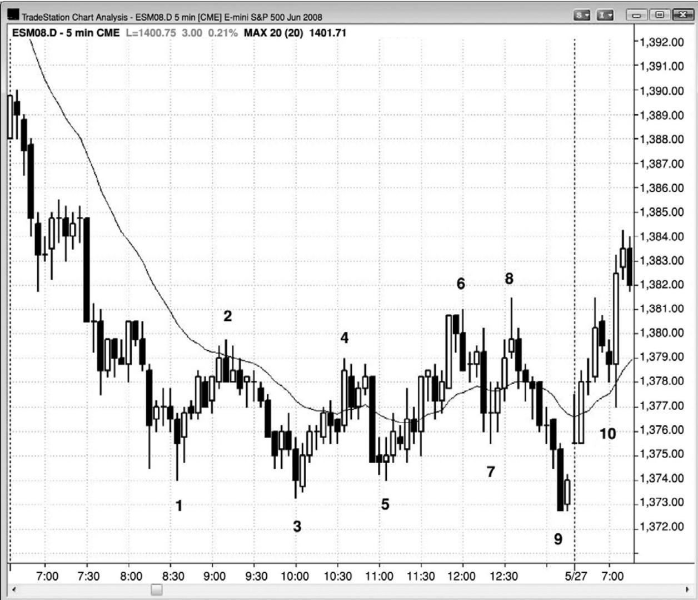
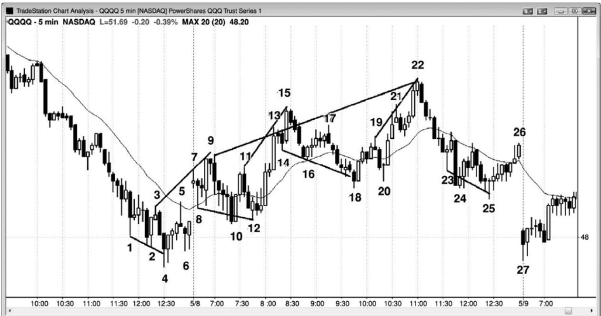
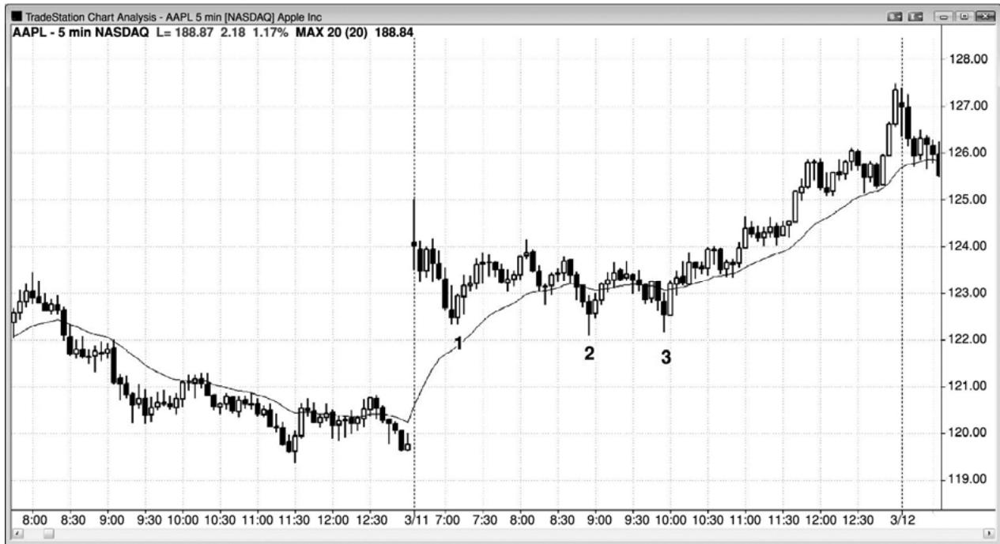
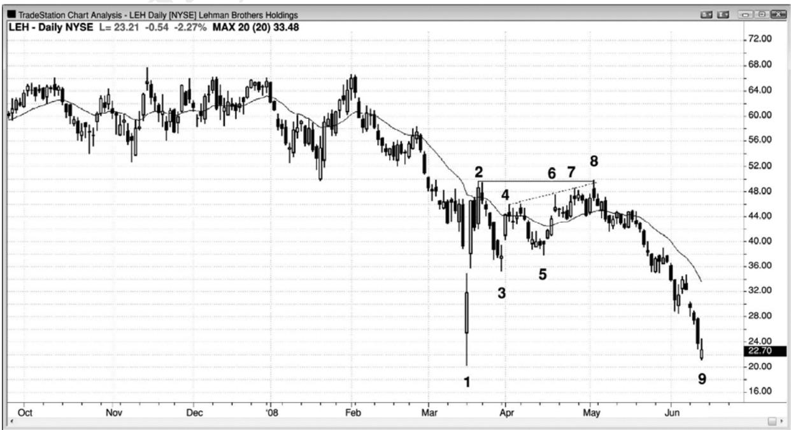
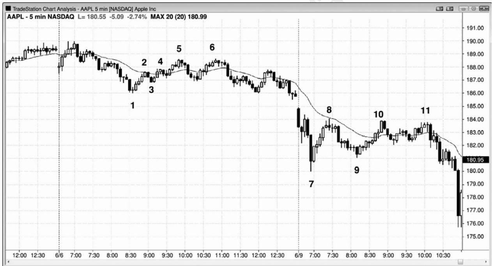
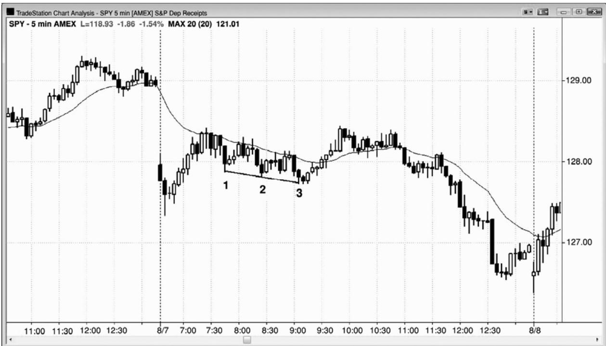
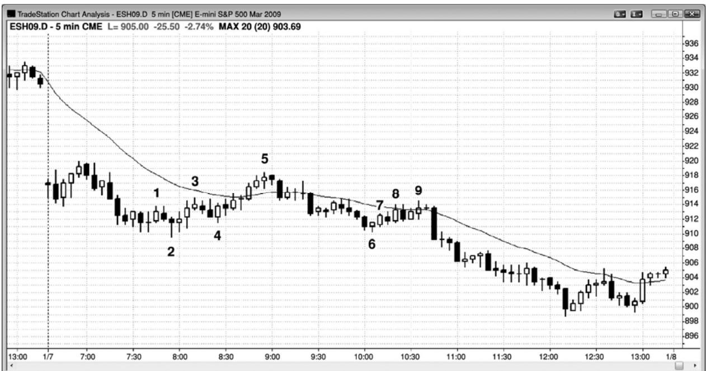
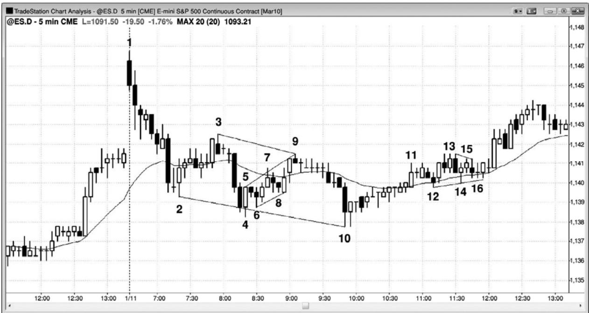
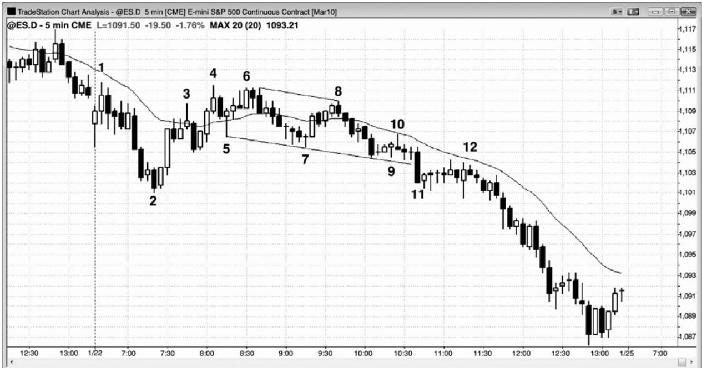

第18章 楔形和其他三推回撤¶
第 18 章 楔形和其他三推回撤
当回撤形成于多头趋势中时，它是多头旗形，而当回撤形成于空头趋势中时，它是空头旗形。回撤常常夹在一对收敛的趋势线和趋势通道线之间。在这种情况下，它是水平的，是一个三角形，可能向任一方向突破。不过，当它在多头趋势中呈下降之势，在空头趋势中呈上升之势时，就把它叫做楔形，而且像所有回撤一样，它通常会在趋势方向上突破。像其他类型的三角形一样，它至少拥有 5 条腿，但是与一般的三角形不同，第二条腿常常会超越前一波段点。它可能就是一个简单的三推楔形形态，也可能是尖峰之后的一条通道。它还可能呈现出不规则的形状，一点也不像楔形，但是拥有与趋势相反的三推，那就足以证明它是一个合格的三角形，或者，如果它是倾斜的，那么就是一个楔形三角形，或者简单地说就是一个楔形。
楔形回撤是一种顺势架构，交易者们可以在第一个信号入场，即在市场刚刚反转进入趋势方向时入场。楔形也可能是可靠的反转形态，但是与楔形回撤不同，楔形反转是一种逆势架构，所以通常最好是等待二次入场。举例说明，除非楔形顶极强，否则交易者们应该等待空头突破，然后再研判市场的力量。如果楔形顶很强，那么他们就注意观察，看是否会形成突破回撤做空架构，如果形成，他们就可以做空。回撤可能形成更高高点或更低高点。如果突破很弱，那么交易者们应该预期它失败，然后寻找买进架构，所以他们可以在失败的空头突破入场，预期多头趋势恢复。
如果楔形反转形成于多头趋势中，那么它是向上倾斜的，这一点与多头趋势中的楔形回撤不同，多头趋势中的楔形回撤是向下倾斜的。空头趋势中的楔形底是向下倾斜的，而楔形空头旗形是向上倾斜的。另外，楔形旗形通常是较小的形态，大多数只持续 10 到 20 棒左右。由于它们是顺势架构，所以它们没有必要是完美的，很多并不明显，看起来一点也不像楔形或其他类型的三角形，但是它们拥有三次回撤。一个反转通常至少需要 20 棒，而且拥有一条清晰的趋势通道线，其强度足以令趋势反转。
楔形也可以形成于交易区间内，交易区间内的楔形通常同时拥有楔形旗形和楔形反转的特征。如果楔形很强，而且存在明显的双向交易，那么在第一个信号入场通常可以获利。但是，每当你拥有任何合理的怀疑时，就要等待二次信号。楔形反转将在第三本书中关于趋势反转的一章中详细讨论。
当一个楔形以回撤的形式出现在一轮趋势中，然后趋势恢复时，它的突破使逆势行为反转回到趋势方向。记住，楔形通常是趋势的终点，回撤是小型趋势（但是与较大趋势的方向相反），所以把楔形回撤看作类似于楔形反转是讲得通的。一般而言，如果楔形向右上倾斜，那么无论它是空头趋势中的回撤还是多头趋势中的顶部，都可把它看作一个空头旗形，即使之前没有空头趋势，因为它通常会向下突破。这是因为它的突破行为和突破后的坚持到底，与强空头趋势中的空头旗形并无差别。如果它是向右下倾斜，那么不管它是一个实际的多头旗形，还是一轮空头趋势的底部，都可把它看作一个多头旗形，而且它最终通常会向上突破。正如在后面我们所要讨论的，低点 3 在功能上与楔形顶是相同的，实际上常常就是一个楔形顶，而在交易时应把高点 3 当作楔形底。
一轮强趋势有时会在正午形成一波三条腿回撤，持续几个小时，并且没有多少动能。有时，它是一个尖峰和通道形态，那是一种常见的楔形回撤。通道常常拥有平行的上下轨线，外形与楔形相异，但仍然是一种可靠的顺势架构。无论你把它叫做回撤、交易区间、三角形、旗形、三角旗形、楔形，还是其他的什么名字，都没有关系，因为精确的外形是不相关的，所有这些回撤的变种都拥有同等重要的意义。重要的是第三个波段把逆势交易者套入不好的交易，因为他们错误地认为第三条腿是一轮新趋势的开始。这是因为大部分回撤都是以两条腿结束，每当出现第三条腿时，交易者们便怀疑市场是否已经反转。
图 18.1 楔形空头旗形和扩张三角形

P163
强趋势之后常常是一个三波段的回撤，一般动能较低。在图 18.1 中，棒 4、6 和 8 是棒3新低之后的三波回撤的顶部，每一回撤都是一个多头趋势波段（更高低点和高点）。由于很多棒线都与先前的棒线重叠，很多棒线都带有尾线，而且有很多空头趋势棒，所以上行动能很弱。这将使得交易者们在每个新高做空。
图中还有一个扩张三角形（棒 1、2、3、8 和 9）。做多入场架构是棒 9 后面的那条内包棒，但它是当天最后一棒。但是，第二天开盘市场向上跳空，超越信号棒（不要在向上跳空买进；仅当入场棒开盘低于信号棒高点，然后市场穿越你的买进止损时选择入场），所以在第二天棒10突破回撤形成前，没有入场棒。

P164
如图 18.2 所示，棒 9、15 和 22 形成一个大型空头旗形，形成 5 分钟 QQQQ 三波段序列中的中间一条腿，该三波段序列的形成花了三天时间（一轮空头趋势，然后是一波三推上涨，然后是对空头趋势低点的测试）。虽然上行动能不错，但是与先前的空头趋势相比，它实际上非常微小的，先前空头趋势的低点几乎总要被测试。对那个低点的测试发生在第三天的开盘。截止棒22的楔形只是一个大型空头旗形，在15分钟或60分钟图上将很容易看出。
棒 4 处的楔形反转尝试太小，未能引起重要反转，交易者们可能只是刮头皮，而且只是在一个更高低点之后。不过，棒 6 更高低点在当天出现得太晚，所以无法交易。
当市场进入大型交易区间时，将形成很多楔形回撤，引出可行的刮头皮交易。由于市场是在交易区间内，所以交易者们可以在反转入场，而不必等待二次信号。然而，当楔形较陡时，通常最好等待。举例说明，棒 11、13 和 15 楔形处于相对紧凑的多头通道内，有些交易者可能喜欢等待在棒 17 高点下方做空，预期出现第二条下跌腿。
在截止棒 15 的强反弹之后，棒 14、16 和 18 形成一个楔形多头旗形，交易者们可能会在棒 18 上方买进。但是，由于它是连续出现的第 7 条下跌棒，所以别的交易者可能更喜欢等到在棒 20 更高低点上方买进。

如图18.3所示，苹果（AAPL）中的大型上涨缺口实际上是一条陡峭的多头腿（一个多头尖峰）。然后是三波回撤，第三波回撤是一个失败的波段（它未能跌破前一低点）。为了简便起见，可以把它叫做楔形，尽管它的外形并不是很好的楔形。上涨缺口是尖峰，截止棒 3 的横向运动是引出多头通道的回撤。这是一个趋势恢复日的变种，其中第一条多头腿是开盘缺口。

P165
在图 18.4 中，雷曼兄弟控股（LEH）在棒 1 形成一个大型反转日，成交量异常放大，被作为强有力的支撑和一个长期底部而广泛报导。
棒8是一个楔形回撤（棒4、6或7 和8）和一个小型三推形态（棒6、7和8）的终点。它还与棒 2 形成一个双重顶空头旗形（棒 8 高出 24 美分，但在日线图上是足够接近的）。
棒 1 是一个卖出高潮，是一个下跌尖峰，之后是一个上涨尖峰。当多头继续买进，试图制造一条多头通道，空方继续卖出，试图制造一条空头通道时，市场常常进入横盘。这里，空方获胜，多方不得不抛出他们的多头头寸，增加了卖压。不久，股价跌破巨型反转棒棒 1，美国第三大投资银行LEH，几个月之后歇业。
棒 1 是一个单棒岛形底的例子，在它之前有一个耗尽缺口，在它之后有一个突破缺口。

如图18.5所示，市场形成一波两条腿调整，至棒6结束，第一条腿结束于棒5。棒5 是一个楔形，像往常一样，它实际上有两条腿，第二条腿由两条较小的腿构成（棒 4 和棒 5）。截止棒1的运动是一个小型尖峰，然后棒2、4和5是一条通道内的三次上推。从棒5开始的抛盘向下突破多头通道，突破之后的回撤在棒 6 形成一个更高高点。
第二波向上的三条腿调整从棒 7 开始。无论你把它看作一个三角形还是两条腿，都不重要。一条腿是从棒 7 到棒 8，另一条腿是从棒 9 到棒 11，第二条腿由两条较小的腿构成。三条腿调整在趋势中很常见，有时它们实际上只是两条腿，第二条腿包含两条较小的腿。当难以计数时，就不要再考虑任何计数的问题，而是考虑趋势和市场没有能力大幅超越均线。寻找做空入场，不必过分担心腿形计数，即便腿形计数给出避免下单的理由。
P166

有时，回撤可能是一个小型的尖峰和通道形态，形成一个楔形多头旗形（见图 18.6）。这里，有一波多头上涨运动，然后是一个截止棒 1 的小型下跌尖峰，那是下跌尖峰的第一次下推，之后是另外两次下推。尖峰之后的通道常常以三推结束，这一个三推形态成为一个楔形多头旗形和当天的一个更高低点。从棒 3 开始形成第二次上推，上涨幅度大约与从开盘低点开始的反弹相当（一波腿1＝腿2的测量运动）。
当第一次和第二次下推的动能都很强时，不要急切地在第二条下跌腿后的高点 2 买进。第一个强下跌尖峰常常意味着你应该允许出现可能的楔形调整。等待高点 2 信号棒（这里是棒 2 处的双棒反转）被向上突破后的回撤。那个二次入场架构可能是一个更高低点，也可能像这里一样是一个更低低点，形成一个楔形多头旗形。
就像所有尖峰和通道形态一样，最低目标是通道起点，即棒 1 后面的那个高点，上涨幅度至少允许做一笔多头刮头皮。市场超越最低目标，测试开始反弹的高点，形成一个大型双重顶空头旗形，引出一轮空头趋势进入收盘。

三推回撤常常形成可靠的顺势入场（见图 18.7）。
棒 1 是一个低点 2，它成为空头反弹中三次上推的第一次。棒 2 低于引出棒 1 上推的那一棒的低点，但那并没有关系，实际上，当一个最终旗形演变为一个更大形态时，常常会出现这种情况。这里，那个更大的形态是一个三上推空头反弹，在棒 5 处的第一均线缺口棒结束。它也是一轮小型的尖峰和通道多头趋势，其中截止棒 3 的运动是尖峰，从棒 4 到棒 5 的反弹是通道。小型尖峰和通道形态常常是两条腿反弹，由于它跟在棒 1 上推之后，所以它的两条腿是楔形空头旗形的第二条和第三条腿。
P167
开盘下跌缺口是一个空头尖峰，截止棒 2 的下跌运动是通道。棒 5 测试通道的顶部，并与那个顶部形成一个双重顶。
棒 7 到棒 9 形成一波三推回撤，是一条略微上升的紧凑通道，在均线处停止。一般而言，只有非常老练的交易者才可以考虑在紧凑的交易区间中下单，因为它们很难解释，那同时降低了交易的胜率。
棒 9 与棒 6 前面第四棒形成一个双重顶空头旗形，棒 6 是一个空头尖峰之后的一条空头通道的起点。

在图 18.8 所示的 5 分钟电子迷你图表中，有几个楔形回撤。棒 2、4 和 10 的三次下推形成一个典型的楔形反转形态，但由于它是在棒 1 到达顶部的多头趋势中的一波大型调整，所以它是一个楔形回撤。那波回撤持续的时间足以构成一轮小型空头趋势，不过那轮空头趋势只是较大的多头趋势中的一波回撤。
棒5、7和9是一条通道内的三次上推，形成对从棒3到棒4简短而强劲的下跌运动的一波调整。你可以利用棒线的极点或者实体的顶部或底部来画线。由于楔形回撤的外形常常是不规则的，所以不精确的趋势线和趋势通道线是规则，而不是例外。
在从棒 10 开始的上涨运动中，棒 12、14 和 16 在一波横盘调整中形成三次下推。三角形是一种类型的三推形态。注意棒 13 的高点向上趋势了棒 11 处的高点。第一次下推之后的反弹常常会超越前面与它相邻的那个波段高点。
一旦棒 9 成为一条空头反转棒，你就可以利用棒 5 高点绘制一条最佳拟合趋势通道线，棒7高点位于那条线之上，但并没有关系。类似地，一旦市场在棒10之后形成一条多头内包棒，形成楔形顶买进架构，你就可以连接棒2和棒10的底部以便突显出那个楔形，棒4第二次下推低于那条线，但没有关系。
图 18.9 失败的楔形多头旗形

P168
在图 18.9 中，5 分钟电子迷你试图形成一个楔形多头旗形，但是失败了。棒 5、7 和 9是三次下推，形成一个楔形多头旗形做多架构，但是在棒 9 前后没有形成可靠的信号棒以做多。这将与棒 3 后面的回撤形成一个双重底。非但没有形成强多头反转架构，而且市场进入一段小型紧凑交易区间。棒 11 向下突破预示着那个楔形底的失败，可能形成一波向下的测量运动。棒 11 成为一条延长的空头通道的尖峰，那条通道一直延伸到收盘。